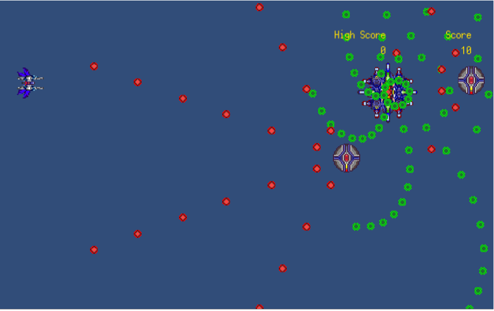

Kotaro Portfolio site
AboutMe
虎太郎
NITKC 58S,現プログラミングラボ部部長
普段はUnityでわいわいやっている人です。HTML,CSS,JavaScriptはこのサイトを作るときにかじりました
SFが好きですが、様々なジャンルの本や漫画を読んでいます。特に上田早夕里さんの「華竜の宮」はおすすめです
制作したゲーム

Shooting1
2020/02
Background vector created by starline - www.freepik.com